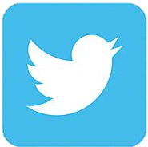

MY ACTIVITY No. 3
Facebook ang aking unang social media na nagamit. Dito ako nakakakuha ng update pagdating sa latest trends at latest updates. Malaki ang sako ng facebook kaya napakaraming information din ang nakapaloob dito. Dito lumalabas ang mga information na ating pwedeng malaman hindi lang sa ating lugar kundi pati narin sa buong bansa. Dahil sa bilis at lawak ng internet, nakakakuha rin tayo ng information at updates Internationally.
Youtube ay isa sa aking source of information. Dito ako natututo ng maraming bagay. Dito ako nakakakuha ng mga information na kailangan ko sa maraming bagay. Maraming tutorials na makakatulong sa akin lalo na sa pag-aaral. Youtube din ang aking source sa pagsuporta sa vlogs na madalas kong pinapanood.
Tiktok ang isa sa napili kong website dahil ito ang madalas kong ginagamit. Dito ako nakakapanood ng mga trends na kadalasang umuusbong. Isa rin ito sa aking pampalipas oras kapag ako ay walang ginagawa. Maraming content ang pwedeng makita dito dahil ang Tiktok ay sumikat lalo na sa panahon ng lockdown sa kasagsagan ng pandemic.
Google ang isa sa aking reliable sources pagdating sa informationg gathering. Ito ang aking ginagamit sa pag-aaral kapag kailangan ko ng mga information sa isang topic. Google din ang isa sa pinaka common na website na madalas gamitin dahil sa napaka dali nitong magamit. Kung anong kailangan, ang information ay mabilis na lamang maaaccess.

Twitter ang nagsisilbi kong diary sa halos lahat ng nangyayare sa akin. Dito ko nailalabas yung mga salitang hindi ko mabanggit sa harapan ng iba. Ito rin ang nagsisilbi kong unan dahil dito ko nailalabas lahat ng aking sama nang loob. Sa twitter ko nailalabas ang aking other side dahil sa twitter, walang nakakakilala sa akin.